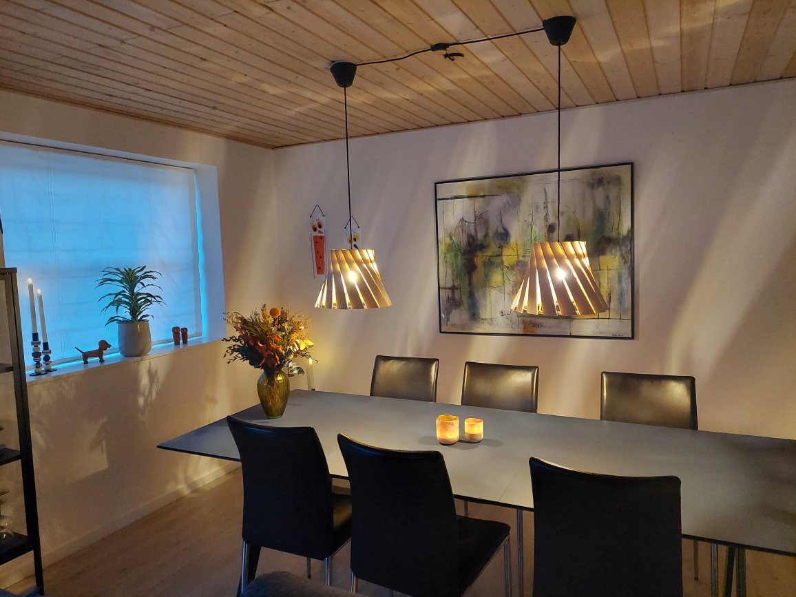

sorenfroststaal - array lamp shade
En håndlavet E27-lampeskærm med egetræslameller, 3D-printede dele og magnetisk montage.
sorenfroststaal - array lamp shade
Array er en håndlavet E27-lampeskærm, hvor drejede egetræslameller filtrerer lyset og giver formen et levende udtryk fra alle vinkler.
Idéen begyndte som en Blender-rendering til RenderWeekly på Instagram. Gennem digitale og fysiske iterationer blev den til et færdigt produkt: 3D-printede dele, håndbearbejdet messing og egetræ fra restproduktion. Lamellerne sidder med magneter og kan hurtigt tages af ved rengøring.

- Fatning
- E27
- Anvendelse
- Til pendel-, bord- og gulvlamper
- Fremstilling
- Håndlavet
- Lameller
- Aftagelige med magneter